Schritt für Schritt mit Bildern, wie bei Lego. Bei jedem Schritt steht, welche Teile und welche Schrauben du brauchst. Die Schrauben sind in Originalgröße gezeichnet: PDF in 100 % drucken und die Schraube aufs Papier legen.
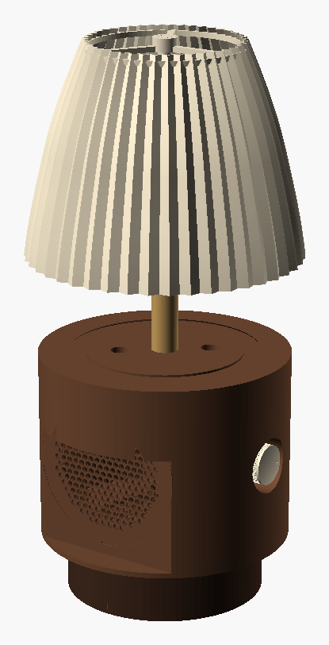
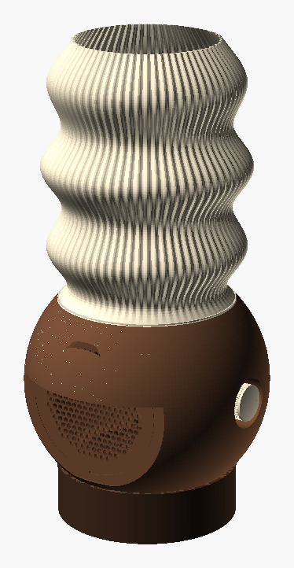
Kugel und Zylinder werden genau gleich gebaut. Bis auf den Körper und die Schirmteile sind alle Druckteile dieselben.
Welche Dateien du druckst, steht im Paketordner deiner Variante (hardware/pakete/<fuss>-<schirm>/).
Nur Linsenkopf, selbstschneidend für Kunststoff (BT = „Blechtreib“-Gewinde, z. B. Bambu Lab Maker's Supply). Keine Senkköpfe, keine Gewindeeinsätze, kein Lötkolben fürs Gehäuse.
| Schraube | Anzahl | Schritt | Wofür | |
|---|---|---|---|---|
| BT3 × 12 | 8 | 1 | Breitbänder und Passivmembran auf die Schallwände | |
| BT3 × 10 | 4 | 4 | Körper auf den Sockel, von unten | |
| BT3 × 10 | 3 | 6 | Bodenplatte an den Sockel, unter den Gummifüßen | |
| BT2.6 × 6 | 2 | 5 | LM2596 auf die Bodenplatte | |
| Abstandsbolzen M2,5 × 11 | 4 | 5 | Pi auf die Bodenplatte, schneiden ihr Gewinde selbst | |
| M2,5 × 5 | 4 | 5 | DigiAMP+ auf die Bolzen |
| Schirm | Stiel | Datei im Paket |
|---|---|---|
| Plissee, Glocke | 140 mm | 07_stiel_140mm.stl |
| Kolben, Twist, Laterne | 95 mm | 07_stiel_95mm.stl |
Statt gedruckt geht auch Messingrohr: Ø 20 mm außen, mindestens 13 mm innen, gleiche Länge. 18 mm davon stecken im Deckel.
| Werkzeug | Kreuzschraubendreher PH1 und PH0, Steckschlüssel 5 mm, Lötkolben für Kabel, Multimeter |
| Dichten | Moosgummi-Dichtband 3 mm (Lautsprecherflansche, Deckel), Silikon (Kabeldurchführungen) |
| Dämmen | Polyesterwatte ca. 30 g |
| Füße | 3 Gummifüße Ø 12 mm, selbstklebend (sie decken die Bodenschrauben ab) |
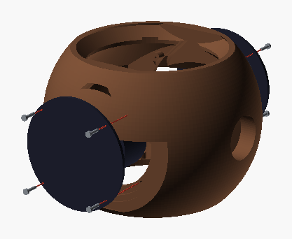
Moosgummi auf die Flansche kleben. Vorher 2 Kabel (ca. 30 cm) an den Breitbänder löten, rot = +, und nach innen fädeln. Breitbänder vorne (Knopf rechts), Passivmembran hinten, jeweils von außen in die flache Schallwand setzen. Je 4 Schrauben über Kreuz anziehen. Die Schrauben gehen gerade von vorne rein, nichts liegt im Weg.
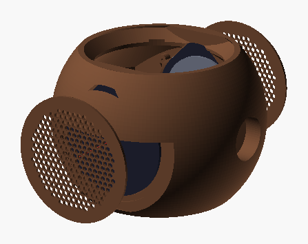
05_gitterGitter auf die Mulde legen und rundum andrücken, bis die 3 Rastnasen einschnappen. Es sitzt dann bündig und verdeckt Schrauben und Flansch. Zum Abnehmen einen flachen Schraubendreher in die Kerbe unten stecken und hebeln.
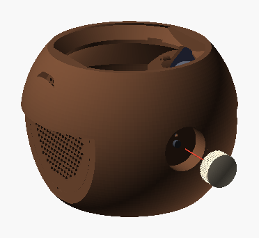
06_knopfDrehgeber von innen (durch die offene Unterseite) durch das Loch im Boden der Knopfmulde stecken, die kleine Nase in ihr Loch. Mutter in der Mulde anziehen, Gewinde mit etwas Silikon dichten. 5 Litzen anlöten und nach unten führen. Knopf auf die D-Welle stecken: er schließt bündig mit der Außenkontur ab, rundherum bleibt Platz für die Finger.
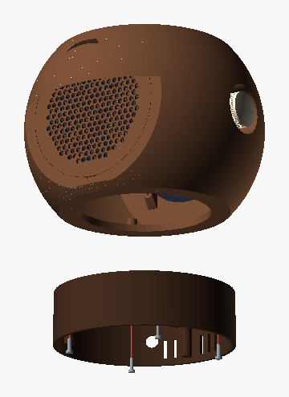
02_sockel, Polyesterwatte, SilikonPolyesterwatte locker in die Kammer legen, Lautsprecher frei lassen. Lautsprecher- und Drehgeberkabel durch die Löcher in der Sockeldecke nach unten fädeln. Körper aufsetzen (Knopf rechts) und von unten aus dem Sockel mit 4 Schrauben anziehen. Die Kabellöcher mit Silikon schließen, die Kammer muss dicht sein.
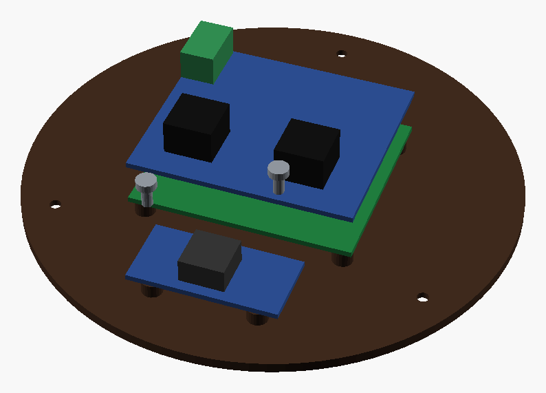
03_bodenplatte, Pi 3 A+, DigiAMP+, LM2596, DC-Buchse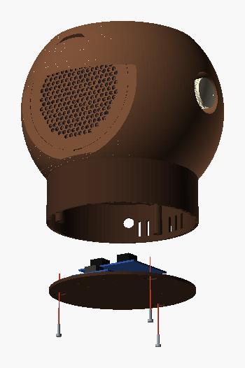
Erst testen: Netzteil einstecken, die Lampe erscheint nach etwa einer Minute in Home Assistant. Dann die Platte einsetzen und von unten mit 3 Schrauben anziehen. Die Köpfe liegen in kleinen Mulden, die Gummifüße kommen direkt darauf und verdecken sie.
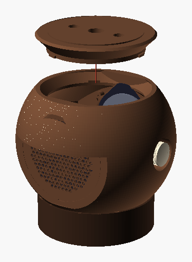
04_deckel, Moosgummi-Ring, Draht als ZugbandZugband von oben durch den Kanal im Deckel und die Kammer bis nach unten schieben, das LED-Kabel (3 Adern) daran nach oben ziehen. Moosgummi-Ring auf den Sitz legen. Deckel so einsetzen, dass die 3 Nocken in die 3 Schlitze fallen, und mit den zwei Fingerlöchern eine Drittel-Drehung im Uhrzeigersinn drehen. Keine Schrauben: der Rand liegt danach bündig in der Kontur.
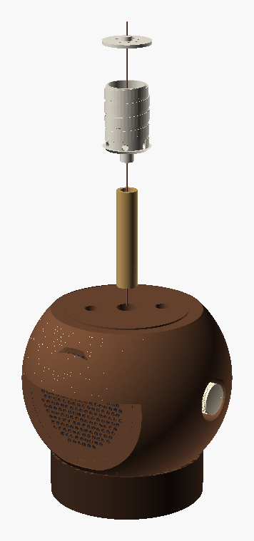
07_stiel_…, 08_lichtkern, 09_kerndeckel, LED-Strip 0,5 mLED-Kabel durch den Stiel ziehen, Stiel in die Buchse im Deckel stecken. Strip in 4 Windungen um den Kern kleben, Anschluss unten: rot +5V, schwarz GND, blau DIN. Kern mit seinem Zapfen in den Stiel, Kerndeckel aufsetzen: der Ring auf dem Kern greift in die Nut des Deckels.
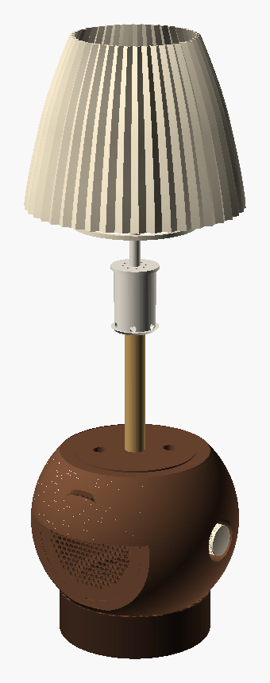
10_spinne, 11_schirm_…Spinne auf den langen Stift des Kerndeckels stecken. Schirm von oben darüberstülpen, er liegt auf dem Ring der Spinne. Keine Schrauben.
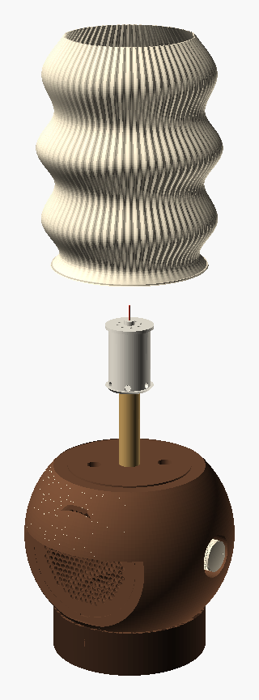
11_schirm_…Schirm über den Lichtkern stülpen und mit seinem Fußring in die Ringmulde oben im Deckel stellen. Er läuft ohne Absatz aus der Kugel heraus. Kein Adapter, keine Schrauben. Wer ihn sichern will, legt ein Stück Silikon-Klebeband in die Mulde.